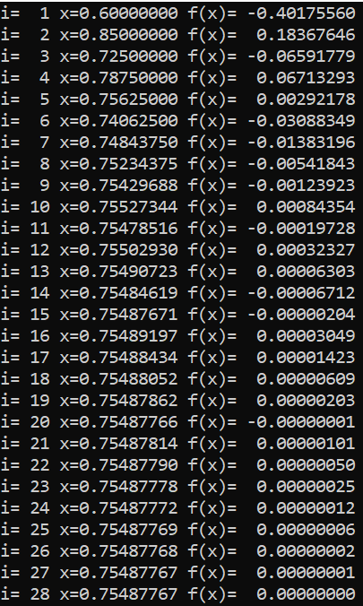
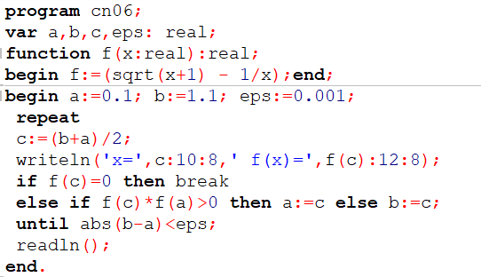
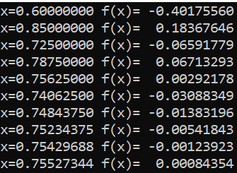
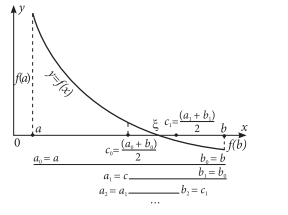

Metoda Bisecției
Metoda Bisecției este una din cele mai ușoare metode pentru determinarea f(x)=0
Metoda presupune
determinarea punctului de mijloc c al segmentului [0.1, 1.1], apoi calculul valorii f(c).
Dacă f(c) = 0,
atunci c este soluţia
exactă a ecuaţiei.
În caz contrar, soluţia este căutată pe unul dintre
segmentele [0.1, c] şi [c, 1.1].
Ea va aparţine segmentului pentru care semnul funcţiei în
extremităţi este
diferit
Dacă f(a) × f(c) > 0, atunci soluţia e căutată în continuare pe
segmentul [a1, b1], unde a1 primeşte valoarea c,
iar b1 – valoarea b. În caz contrar, a1
primeşte valoarea a, iar
b1 – valoarea c.
Procesul de divizare se reia pe segmentul [a1, b1], repetîndu-se pînă
cînd nu se obţine soluţia exactă sau devierea soluţiei calculate
ci de la cea
exactă nu devine suficient
de mică.
Programul utilizat pentru aflarea f(x)=0 cu ajutorul acestei metode este :

Programul utilizează
funcția și o iterează prin niște operații adiționale pentru a mări precizia
rezultatului.
Și în
rezultat, după 28 iterații putem vedea succesul programului:

Observăm niște
"erori" care sunt rezultatele negative ce nu ar trebui să fie sau care programul nu este în stare să
le calculeze.
Dar la sfârșit ajungem la rezultatul dorit și putem numi "run"-ul un succes.
Pentru metoda ce utilizeaza precizia avem programul:

si deja rezultatul programului:


Înapoi